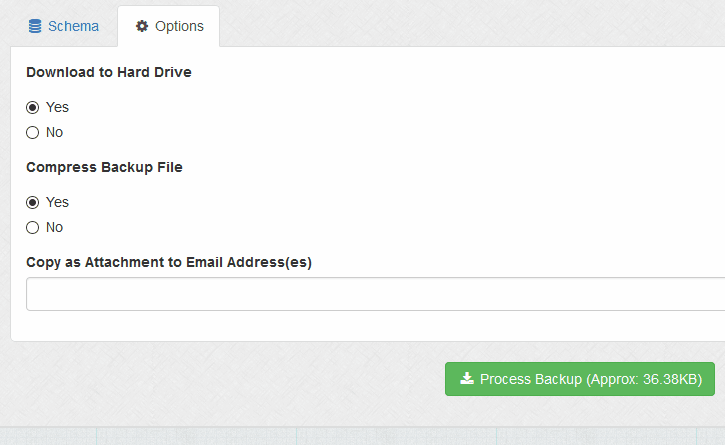
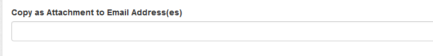

Toggle Navigation
Documentation
Database Backup
Overview
Option to create a SQL schematic dump of your database.
Schema
Shows current database schema.
Options > Download to Hard Drive
If set, file download box is launched when you click button. This is the default option.

Options > Compress Backup File
Enables Gzip compression, should be used for large databases.
Options > Copy as Attachment to Email Address(es)
If set, emails attachment to email addresses specified. Comma delimit for multiple addresses.

Auto Backup
If you wish you can automate the task of backing up your database via a cron job. More information
here
.